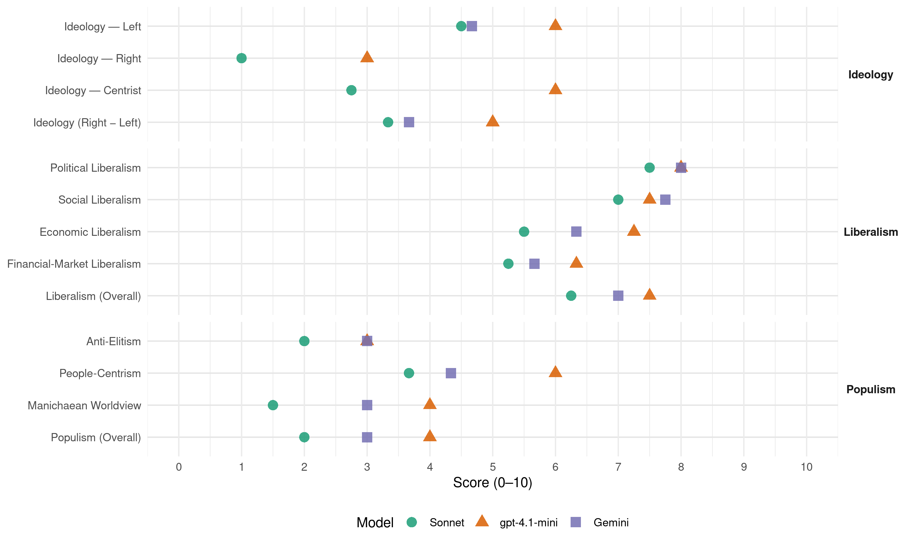

PLN (Costa Rica, 2002)
manifesto_id 153321_200202
Get full text: This site shows derived annotations and short verbatim quotes only. The full manifesto text is © Manifesto Project / WZB — obtain it via manifesto-project.wzb.eu using the manifesto_id above.
Headline scores
| Dimension | Sonnet | gpt-4.1-mini | Gemini |
|---|---|---|---|
| Populism (Overall) | 2.0 | 4.0 | 3.0 |
| Anti-Elitism | 2.0 | 3.0 | 3.0 |
| People-Centrism | 3.7 | 6.0 | 4.3 |
| Manichaean Worldview | 1.5 | 4.0 | 3.0 |
| Ideology (Right − Left) | 3.3 | 5.0 | 3.7 |
| Liberalism (Overall) | 6.2 | 7.5 | 7.0 |
| Political Liberalism | 7.5 | 8.0 | 8.0 |
| Social Liberalism | 7.0 | 7.5 | 7.8 |
| Economic Liberalism | 5.5 | 7.2 | 6.3 |
| Financial-Market Liberalism | 5.2 | 6.3 | 5.7 |
Evidence per dimension
Economic Liberalism
Gemini · score 4.0 · mixed · chunk 1
“oponemos frontalmente a políticas de apertura comercial”
democratiza las economías locales. Nos oponemos frontalmente a políticas de apertura comercial desenfrenadas, que están provocando
Gemini · score 7.0 · verified · chunk 2
“reducir las tarifas aéreas a través de una mayor competencia”
procedencia de vuelos internacionales de cualquier país del mundo, que contribuya a aumentar la afluencia de turistas, así como a reducir las tarifas aéreas a través de una mayor competencia.
Gemini · score 6.0 · verified · chunk 3
“demanda una combinación de Estado y mercado”
combate a la pobreza demanda una combinación de Estado y mercado; un modelo mixto que mencionamos
Gemini · score 6.0 · verified · chunk 4
“coalición fructífera entre los sectores público y privado”
desarrollo hacia un modelo mixto que haga posible una coalición fructífera entre los sectores público y privado, y entre las autoridades centrales
gpt-4.1-mini · score 7.0 · verified · chunk 1
“la política fiscal, comercial y de producción”
…los principales lineamientos del PLN para el período 2002-2006 en materia de política fiscal, monetaria, comercial, y de producción. A. POLÍTICA ECONÓMICA 1. Política fiscal… 2. Comercio exterior… 3. Inversión extranjera directa… 4. Política monetaria… 5. Producción y precios…
gpt-4.1-mini · score 7.0 · verified · chunk 2
“libre competencia”
Costa Rica aspira a mantener con miras a incrementar el número y la procedencia de vuelos internacionales de cualquier país del mundo, que contribuya a aumentar la afluencia de turistas, así como a reducir las tarifas aéreas a través de una mayor competencia.
gpt-4.1-mini · score 7.0 · verified · chunk 3
“la política económica debe jugar un papel importante creando los incentivos adecuados para que los mercados actúen a favor de los pobres”
El Estado, per se, no puede resolver el problema pero tampoco debe rehuir su responsabilidad primaria; pero también demanda que los mercados faciliten la participación retributiva de los pobres creando oportunidades. Para lograr esto, la política económica debe jugar un papel importante creando los incentivos adecuados para que los mercados actúen a favor de los pobres.
gpt-4.1-mini · score 8.0 · verified · chunk 4
“una estructura tributaria sólida, ágil y eficiente”
Es por eso que se hace necesaria la conformación de una estructura tributaria sólida, ágil y eficiente, capaz de financiar en forma sostenida la estructura social a la que aspiramos los costarricenses, pero sin filtraciones o esquemas que permiten que unos paguen mientras otros evaden y, sobre todo, sin que la carga mayor recaiga sobre los más débiles.
Sonnet · score 4.0 · verified · chunk 1
“no deje las cosas totalmente en manos”
una política económica que no deje las cosas totalmente en manos de un mercado muy imperfecto sino que admita una mayor dosis de orientación y participación estatal
Sonnet · score 6.0 · verified · chunk 2
“mayor competencia”
reducir las tarifas aéreas a través de una mayor competencia. F. PLANIFICACIÓN TERRITORIAL Y URBANA
Sonnet · score 6.0 · verified · chunk 3
“los mercados faciliten la participación retributiva de los pobres”
también demanda que los mercados faciliten la participación retributiva de los pobres creando oportunidades. Para lograr esto, la política económica debe jugar un papel importante
Sonnet · score 6.0 · verified · chunk 4
“modelo mixto que haga posible una coalición fructífera”
reorientación de nuestra estrategia de gobierno y de desarrollo hacia un modelo mixto que haga posible una coalición fructífera entre los sectores público y privado
Financial-Market Liberalism
Gemini · score 5.0 · verified · chunk 1
“modernización del Sistema Financiero”
Proponemos, también, la modernización del Sistema Financiero (mediante la apertura, el mejoramiento de aspectos
Gemini · score 7.0 · verified · chunk 2
“desarrollo del mercado de capital de riesgo”
En Costa Rica, hay diversos obstáculos (fiscales, del mercado financiero, culturales, etc.) que hasta ahora han impedido el desarrollo del mercado de capital de riesgo.
Gemini · score 5.0 · verified · chunk 3
“invertir en títulos emitidos por el BANHVI”
relacionado con la autorización de invertir en títulos emitidos por el BANHVI y sus entes autorizados.
gpt-4.1-mini · score 6.0 · verified · chunk 1
“modernización del Sistema Financiero”
…proponemos, también, la modernización del Sistema Financiero (mediante la apertura, el mejoramiento de aspectos operativos, una mayor eficiencia y competencia); continuar impulsando el desarrollo y ampliación del mercado accionario, como medio para alcanzar una mayor democracia económica; propiciar la autonomía del BCCR, impidiendo… la participación de funcionarios de empresas financieras y bursátiles en la junta directiva y altos riesgos de la institución monetaria…
gpt-4.1-mini · score 6.0 · verified · chunk 3
“el BANHVI debe contar con una planificación de corto, mediano y largo plazo”
El BANHVI debe contar con una planificación de corto, mediano y largo plazo. Anualmente la Junta Directiva debe aprobar un programa de trabajo (basado en información técnica, que incluya entre otros objetivos, resultados cualitativos y cuantitativos esperados, e indicadores) cuyo efecto e impacto debe ser monitoreado.
gpt-4.1-mini · score 7.0 · verified · chunk 4
“instituciones públicas desarrollen una mayor flexibilidad y responsabilidad”
Se impulsarán reformas de las políticas de empleo público, de su marco legal e institucional, de manera que el gobierno y sus instituciones desarrollen una mayor flexibilidad y responsabilidad en la administración del recurso humano del que disponen. Para avanzar en esta dirección, resulta inevitable la transformación y modernización de la Dirección General del Servicio Civil, para convertirla en una instancia capaz de enfrentar los retos señalados y que sirva de soporte al proceso de renovación institucional.
Sonnet · score 4.0 · verified · chunk 1
“modernización del Sistema Financiero”
proponemos, también, la modernización del Sistema Financiero (mediante la apertura, el mejoramiento de aspectos operativos, una mayor eficiencia y competencia)
Sonnet · score 6.0 · verified · chunk 2
“mercado de capital de riesgo”
es necesario hacer un plan nacional para promover ese mercado. De otra manera, se verán muy limitadas las opciones de desarrollo de empresas innovadoras
Sonnet · score 6.0 · verified · chunk 3
“mejorar la eficiencia del sistema financiero”
también es urgente mejorar la eficiencia del sistema financiero, tal como se plantea en la sección relativa a política económica
Sonnet · score 5.0 · verified · chunk 4
“instituciones financieras y comerciales internacionales”
También se jugará un papel más creativo en las instituciones financieras y comerciales internacionales.
Political Liberalism
Gemini · score 8.0 · verified · chunk 1
“le agregan valor a la democracia”
cohesionan a un partido político y le agregan valor a la democracia. Nuestros adversarios de siempre
Gemini · score 8.0 · verified · chunk 2
“democracia representativa hacia la democracia participativa”
se debe avanzar desde la democracia representativa hacia la democracia participativa. Por esto las ofertas
Gemini · score 8.0 · verified · chunk 3
“mecanismos de participación ciudadana como referéndum, plebiscito”
poner en operación mecanismos de participación ciudadana como referéndum, plebiscito y cabildos abiertos
Gemini · score 8.0 · verified · chunk 4
“patrimonio democrático del pueblo costarricense”
ha promovido y defendido de manera exitosa los intereses nacionales, en particular, el extraordinario patrimonio democrático del pueblo costarricense.
gpt-4.1-mini · score 7.0 · verified · chunk 1
“la democracia, la participación ciudadana y la rendición de cuentas”
…la participación ciudadana se convierte en un eje fundamental. El grado de delincuencia en un país no refleja solamente la eficacia de la policía sino también la conducta de una colectividad. La fortaleza de los valores éticos en una sociedad determina el nivel de control social y este es uno de los puntales más importantes a la hora de prevenir el delito y combatir la delincuencia. En consonancia con otras propuestas que desarrollaremos más adelante en el área de nuestro compromiso con una nueva democracia, proponemos… la democracia, la participación ciudadana y la rendición de cuentas…
gpt-4.1-mini · score 8.0 · verified · chunk 2
“democracia participativa”
De acuerdo con nuestros lineamientos, se debe avanzar desde la democracia representativa hacia la democracia participativa. Por esto las ofertas programáticas institucionales deben trabajar desde lo local, de manera que la política de juventud sea representativa de todas las políticas locales.
gpt-4.1-mini · score 8.0 · verified · chunk 3
“la democracia representativa cruje ante la irrupción de varios factores generados en la sociedad civil”
La democracia representativa cruje ante la irrupción de varios factores generados en la sociedad civil. El mayor peso de la opinión pública en las decisiones de los gobernantes, la aparición de una pléyade de organizaciones no gubernamentales (ONG), un claro proceso de descentralización y desconcentración, y la cantidad de referendos y plebiscitos que exhiben las democracias más avanzadas dan cuenta de este tránsito.
gpt-4.1-mini · score 9.0 · verified · chunk 4
“la larga tradición democrática y la educación de su pueblo”
El prestigio que ya tiene el país por haber abolido el ejército, la larga tradición democrática y la educación de su pueblo se unen al esfuerzo y lograrán una atracción masiva de turistas en áreas como el eco y el agroturismo, el cuidado de la salud y, aparte de la atracción de inversiones, permitirá también hacer que el nombre de nuestro país, Costa Rica, se convierte en el nombre de marca que llevarán nuestros productos; que podrán lograr mayores ventajas para colocarse en el mercado internacional, como ya ocurre con una serie de productos agrícolas.
Sonnet · score 7.0 · verified · chunk 1
“nueva democracia que transfiera poder”
Compromiso con una nueva democracia que transfiera poder a la comunidad, otorgue más oportunidades a las mujeres y a los jóvenes
Sonnet · score 7.0 · verified · chunk 2
“democracia representativa hacia la democracia participativa”
se debe avanzar desde la democracia representativa hacia la democracia participativa. Por esto las ofertas programáticas institucionales deben trabajar desde lo local
Sonnet · score 8.0 · verified · chunk 3
“Participación como un Derecho Humano Fundamental”
la necesidad de reconocer y declarar la Participación como un Derecho Humano Fundamental, y de incorporarlo como tal en nuestra Constitución Política
Sonnet · score 8.0 · verified · chunk 4
“rendición de cuentas”
El eje de la transformación del Estado debe estar dado por el concepto de responsabilidad y el consecuente y necesario rendimiento de cuentas.
Liberalism (Overall)
Gemini · score 6.0 · verified · chunk 1
“le agregan valor a la democracia”
cohesionan a un partido político y le agregan valor a la democracia. Nuestros adversarios de siempre
Gemini · score 8.0 · verified · chunk 2
“reducir las tarifas aéreas a través de una mayor competencia”
procedencia de vuelos internacionales de cualquier país del mundo, que contribuya a aumentar la afluencia de turistas, así como a reducir las tarifas aéreas a través de una mayor competencia.
Gemini · score 7.0 · verified · chunk 3
“mecanismos de participación ciudadana como referéndum, plebiscito”
poner en operación mecanismos de participación ciudadana como referéndum, plebiscito y cabildos abiertos
Gemini · score 7.0 · verified · chunk 4
“patrimonio democrático del pueblo costarricense”
ha promovido y defendido de manera exitosa los intereses nacionales, en particular, el extraordinario patrimonio democrático del pueblo costarricense.
gpt-4.1-mini · score 7.0 · verified · chunk 1
“la política fiscal, comercial y de producción”
…los principales lineamientos del PLN para el período 2002-2006 en materia de política fiscal, monetaria, comercial, y de producción. A. POLÍTICA ECONÓMICA 1. Política fiscal… 2. Comercio exterior… 3. Inversión extranjera directa… 4. Política monetaria… 5. Producción y precios…
gpt-4.1-mini · score 8.0 · verified · chunk 2
“democracia participativa”
De acuerdo con nuestros lineamientos, se debe avanzar desde la democracia representativa hacia la democracia participativa. Por esto las ofertas programáticas institucionales deben trabajar desde lo local, de manera que la política de juventud sea representativa de todas las políticas locales.
gpt-4.1-mini · score 7.0 · verified · chunk 3
“la democracia representativa cruje ante la irrupción de varios factores generados en la sociedad civil”
La democracia representativa cruje ante la irrupción de varios factores generados en la sociedad civil. El mayor peso de la opinión pública en las decisiones de los gobernantes, la aparición de una pléyade de organizaciones no gubernamentales (ONG), un claro proceso de descentralización y desconcentración, y la cantidad de referendos y plebiscitos que exhiben las democracias más avanzadas dan cuenta de este tránsito.
gpt-4.1-mini · score 8.0 · verified · chunk 4
“la larga tradición democrática y la educación de su pueblo”
El prestigio que ya tiene el país por haber abolido el ejército, la larga tradición democrática y la educación de su pueblo se unen al esfuerzo y lograrán una atracción masiva de turistas en áreas como el eco y el agroturismo, el cuidado de la salud y, aparte de la atracción de inversiones, permitirá también hacer que el nombre de nuestro país, Costa Rica, se convierte en el nombre de marca que llevarán nuestros productos; que podrán lograr mayores ventajas para colocarse en el mercado internacional, como ya ocurre con una serie de productos agrícolas.
Sonnet · score 5.0 · verified · chunk 1
“democracia económica y social”
abra las puertas a la democracia económica y social. VII. Compromiso con la naturaleza, con la protección ambiental
Sonnet · score 6.0 · verified · chunk 2
“democracia representativa hacia la democracia participativa”
se debe avanzar desde la democracia representativa hacia la democracia participativa. Por esto las ofertas programáticas institucionales deben trabajar desde lo local
Sonnet · score 7.0 · verified · chunk 3
“Participación como un Derecho Humano Fundamental”
la necesidad de reconocer y declarar la Participación como un Derecho Humano Fundamental, y de incorporarlo como tal en nuestra Constitución Política
Sonnet · score 7.0 · verified · chunk 4
“transparente, responsable, moderno, y flexible”
el modelo de estado que queremos implementar es un estado que es más eficiente, participativo, descentralizado, transparente, responsable, moderno, y flexible.
Anti-Elitism
Gemini · score 3.0 · verified · chunk 1
“hecho saber a la clase política”
comunicaciones han favorecido la formación de ciudaddanos mejor informados quienes han hecho saber a la clase política que sus opiniones cuentan
Gemini · score 4.0 · verified · chunk 3
“elimine la corrupción y la influencia politiquera”
otorgar el bono de la vivienda de una manera que elimine la corrupción y la influencia politiquera. Las posibilidades políticas
Gemini · score 2.0 · verified · chunk 4
“extremismo fundamentalista neoliberal, de desmantelar”
No se trata, siguiendo el extremismo fundamentalista neoliberal, de desmantelar el Estado y sus instituciones.
gpt-4.1-mini · score 3.0 · verified · chunk 1
“Nuestros adversarios de siempre, que desdeñan las ideas”
…que ordenan una realidad compleja y le señalan rumbos al país, al mismo tiempo que cohesionan a un partido político y le agregan valor a la democracia. Nuestros adversarios de siempre, que desdeñan las ideas, se privan a sí mismos de la maravillosa experiencia de diseñar en conjunto, con rigor, pero con ilusión, los escenarios futuros de la vida nacional. Nosotros, por el contrario, nos encaminamos hacia el gobierno confiados en contar con un acervo de ideas sólidas y prácticas para sacar a Costa Rica adelante…
gpt-4.1-mini · score 3.0 · verified · chunk 3
“la reacción que hoy hay contra los políticos revela también el deseo de los pueblos”
El triunfo de la democracia representativa fue precedida por un desencanto con la monarquía y todos sus símbolos. La reacción que hoy hay contra los políticos revela también el deseo de los pueblos de gozar de mayor participación y poder de decisión.
Sonnet · score 5.0 · mixed · chunk 1
“reducidos sectores de la población”
el financiamiento de la deuda pública no deja de ser un buen negocio para algunos reducidos sectores de la población, que durante este tiempo han devengado importantes ingresos financieros
Sonnet · score 2.0 · mixed · chunk 2
“clientelismo, la corrupción y la ignorancia”
asistencialismo que ha generado un nudo vicioso en el que se entrelazan el clientelismo, la corrupción y la ignorancia, los cuales reciclan sus efectos
Sonnet · score 2.0 · verified · chunk 3
“extremismo fundamentalista neoliberal, de desmantelar el Estado”
No se trata, siguiendo el extremismo fundamentalista neoliberal, de desmantelar el Estado y sus instituciones. Se trata de reconstruirlo
Sonnet · score 2.0 · verified · chunk 4
“extremismo fundamentalista neoliberal”
No se trata, siguiendo el extremismo fundamentalista neoliberal, de desmantelar el Estado y sus instituciones.
Ideology — Centrist
gpt-4.1-mini · score 5.0 · verified · chunk 1
“el pueblo liberacionista me escogió como candidato”
…el diálogo se enriquecieron, una vez que el pueblo liberacionista me escogió como candidato, con la participación de compañeras y compañeros de las otras tendencias que compitieron en la convención. El resultado es este documento innovador y comprensivo que hoy presentamos al electorado Nacional…
gpt-4.1-mini · score 7.0 · verified · chunk 3
“la participación ciudadana se plantea como un nuevo eje estratégico para un desarrollo nacional en democracia”
La estrategia participativa liberacionista parte de la necesidad de reconocer y declarar la Participación como un Derecho Humano Fundamental, y de incorporarlo como tal en nuestra Constitución Política. La participación ciudadana se plantea como un nuevo eje estratégico para un desarrollo nacional en democracia, con más libertad y equidad.
Sonnet · score 2.0 · verified · chunk 1
“modelo mizto en que estos hábitos”
ya es tiempo de forjar una nueva alianza que construya un modelo mizto en que estos hábitos se refuercen mutuamente
Sonnet · score 3.0 · verified · chunk 2
“combinación de Estado y mercado; un modelo mixto”
el combate a la pobreza demanda una combinación de Estado y mercado; un modelo mixto que mencionamos en otras secciones de esta propuesta
Sonnet · score 3.0 · verified · chunk 3
“modelo mixto que mencionamos en otras secciones”
demanda una combinación de Estado y mercado; un modelo mixto que mencionamos en otras secciones de esta propuesta
Sonnet · score 3.0 · verified · chunk 4
“coalición fructífera entre los sectores público y privado”
un modelo mixto que haga posible una coalición fructífera entre los sectores público y privado, y entre las autoridades centrales y la sociedad civil
Ideology — Left
Gemini · score 5.0 · verified · chunk 1
“propuesta socialdemocrética y liberacionista moderna”
Don Rolando, que nos ha insipirado para reflexionar para lo que debe ser una propuesta socialdemocrética y liberacionista moderna y comprometida
Gemini · score 6.0 · verified · chunk 3
“principios de la social democracia”
Nuestro ideario, consecuente con los principios de la social democracia, se enmarca en el convencimiento
Gemini · score 3.0 · verified · chunk 4
“extremismo fundamentalista neoliberal, de desmantelar”
No se trata, siguiendo el extremismo fundamentalista neoliberal, de desmantelar el Estado y sus instituciones.
gpt-4.1-mini · score 6.0 · verified · chunk 1
“las gastadas recetas del neoliberalismo y de las políticas de ajuste estructural ya se agotaron”
…las gastadas recetas del neoliberalismo y de las políticas de ajuste estructural ya se agotaron. Ya es hora de trascender las falaces ideológicas y mensajes políticos que han enfrentado a los sectores público y privado: por el contrario, ya es tiempo de forjar una nueva alianza que construya un modelo mixto en que estos hábitos se refuercen mutuamente…
gpt-4.1-mini · score 6.0 · verified · chunk 3
“la pobreza se combate educando más y mejor”
La pobreza se combate en sus causas, y en forma particular, la pobreza se combate educando más y mejor. La pobreza se combate integrando y escuchando a los pobres.
Sonnet · score 6.0 · verified · chunk 1
“socialdemocracia moderna mediante un cambio profundo”
Ya es hora de volver al camino de la socialdemocracia moderna mediante un cambio profundo en nuestra manera de organizar el gobierno
Sonnet · score 4.0 · verified · chunk 2
“gasto público social ha sido históricamente el mecanismo de redistribución”
política social del próximo gobierno liberacionista se basa en la premisa de que el gasto público social ha sido históricamente el mecanismo de redistribución de ingreso más importante
Sonnet · score 4.0 · verified · chunk 3
“combate a la pobreza demanda una combinación de Estado y mercado”
el combate a la pobreza demanda una combinación de Estado y mercado; un modelo mixto que mencionamos en otras secciones de esta propuesta
Sonnet · score 4.0 · verified · chunk 4
“sin que la carga mayor recaiga sobre los más débiles”
sin filtraciones o esquemas que permiten que unos paguen mientras otros evaden y, sobre todo, sin que la carga mayor recaiga sobre los más débiles.
Ideology (Right − Left)
Gemini · score 4.0 · verified · chunk 1
“propuesta socialdemocrética y liberacionista moderna”
Don Rolando, que nos ha insipirado para reflexionar para lo que debe ser una propuesta socialdemocrética y liberacionista moderna y comprometida
Gemini · score 5.0 · verified · chunk 3
“principios de la social democracia”
Nuestro ideario, consecuente con los principios de la social democracia, se enmarca en el convencimiento
Gemini · score 2.0 · verified · chunk 4
“extremismo fundamentalista neoliberal, de desmantelar”
No se trata, siguiendo el extremismo fundamentalista neoliberal, de desmantelar el Estado y sus instituciones.
gpt-4.1-mini · score 5.0 · verified · chunk 1
“las gastadas recetas del neoliberalismo y de las políticas de ajuste estructural ya se agotaron”
…las gastadas recetas del neoliberalismo y de las políticas de ajuste estructural ya se agotaron. Ya es hora de trascender las falaces ideológicas y mensajes políticos que han enfrentado a los sectores público y privado: por el contrario, ya es tiempo de forjar una nueva alianza que construya un modelo mixto en que estos hábitos se refuercen mutuamente…
gpt-4.1-mini · score 5.0 · verified · chunk 3
“la participación ciudadana se plantea como un nuevo eje estratégico para un desarrollo nacional en democracia”
La estrategia participativa liberacionista parte de la necesidad de reconocer y declarar la Participación como un Derecho Humano Fundamental, y de incorporarlo como tal en nuestra Constitución Política. La participación ciudadana se plantea como un nuevo eje estratégico para un desarrollo nacional en democracia, con más libertad y equidad.
Sonnet · score 5.0 · verified · chunk 1
“propuesta socialdemocrética y liberacionista moderna”
lo que debe ser una propuesta socialdemocrética y liberacionista moderna y comprometida con todos los aspectos del desarrollo de este país
Sonnet · score 2.0 · mixed · chunk 2
“combinación de Estado y mercado; un modelo mixto”
el combate a la pobreza demanda una combinación de Estado y mercado; un modelo mixto que mencionamos en otras secciones de esta propuesta
Sonnet · score 3.0 · verified · chunk 3
“combate a la pobreza demanda una combinación de Estado y mercado”
el combate a la pobreza demanda una combinación de Estado y mercado; un modelo mixto que mencionamos en otras secciones de esta propuesta
Sonnet · score 2.0 · verified · chunk 4
“modelo mixto que haga posible una coalición”
reorientación de nuestra estrategia de gobierno y de desarrollo hacia un modelo mixto que haga posible una coalición fructífera entre los sectores público y privado
Ideology — Right
gpt-4.1-mini · score 3.0 · verified · chunk 1
“se deberán fortalecer los mecanismos de control de la inmigración ilegal”
…1. Niños y adolescentes en riesgo social - Se fortalecerán y articularán iniciativas dirigidas a disminuir la deserción escolar; a promover programas de empleo juvenil y de promoción del deporte y la recreación en las comunidades; a prevenir el consumo de drogas; a brindar atención a la madre adolescente; a prevenir el maltrato infantil; a controlar la transmisión de programación violenta en medios de comunicación; etc. 2. Población inmigrante y marginal - Al mismo tiempo que el país deberá fortalecer los mecanismos de control de la inmigración ilegal, se deberán desarrollar programas tendientes a mejorar el entorno de la población inmigrante establecida en el país y de los sectores marginales radicados en asentamientos con precarias condiciones de vivienda…
Sonnet · score 1.0 · verified · chunk 1
“control de la inmigración ilegal”
el país deberá fortalecer los mecanismos de control de la inmigración ilegal, se deberán desarrollar programas tendientes a mejorar el entorno
Sonnet · score 1.0 · verified · chunk 3
“recuperar los valores costarricenses de respeto por la familia”
Recuperar los valores costarricenses de respeto por la familia y las personas mayores, sobre todo, de los ancianos.
Sonnet · score 1.0 · verified · chunk 4
“lucha contra el crimen organizado”
acuerdos hemisféricos en materia de migraciones, integración tecnológica, lucha contra el crimen organizado
Manichaean Worldview
Gemini · score 3.0 · verified · chunk 1
“Nuestros adversarios de siempre, que desdeñan las ideas”
le agregan valor a la democracia. Nuestros adversarios de siempre, que desdeñan las ideas, se privan a sí msimos de la maravillosa
Gemini · score 3.0 · verified · chunk 3
“acabar con la injusticia social”
propósitos fundamentales de la participación ciudadana es acabar con la injusticia social, las propuestas participativas
gpt-4.1-mini · score 4.0 · verified · chunk 1
“las gastadas recetas del neoliberalismo y de las políticas de ajuste estructural ya se agotaron”
…las gastadas recetas del neoliberalismo y de las políticas de ajuste estructural ya se agotaron. Ya es hora de trascender las falaces ideológicas y mensajes políticos que han enfrentado a los sectores público y privado: por el contrario, ya es tiempo de forjar una nueva alianza que construya un modelo mixto en que estos hábitos se refuercen mutuamente…
Sonnet · score 4.0 · mixed · chunk 1
“Las gastadas recetas del neoliberalismo”
Las gastadas recetas del neoliberalismo y de las políticas de ajuste estructural ya se agotaron. Ya es hora de trascender las falaces ideológicas
Sonnet · score 1.0 · mixed · chunk 2
“nudo vicioso en el que se entrelazan”
asistencialismo que ha generado un nudo vicioso en el que se entrelazan el clientelismo, la corrupción y la ignorancia
Sonnet · score 1.0 · verified · chunk 3
“lucha frontal contra la corrupción”
De acuerdo con nuestro compromiso de lucha frontal contra la corrupción, vamos a: a. Iniciar una agresiva campaña de rescate de valores
Sonnet · score 2.0 · verified · chunk 4
“unos paguen mientras otros evaden”
sin que la carga mayor recaiga sobre los más débiles. sin filtraciones o esquemas que permiten que unos paguen mientras otros evaden
People-Centrism
Gemini · score 4.0 · verified · chunk 1
“el pueblo liberacionista me escogío”
enriquecieron, una vez que el pueblo liberacionista me escogío como candidato, con la participación
Gemini · score 6.0 · verified · chunk 3
“recuperación de la fe del pueblo en la democracia”
factores más importantes para la recuperación de la fe del pueblo en la democracia y en sus posibilidades.
Gemini · score 3.0 · verified · chunk 4
“intereses de las grandes mayorías”
Solo de esta manera el desarrollo responderá a los intereses de las grandes mayorías de la población
gpt-4.1-mini · score 5.0 · verified · chunk 1
“el pueblo liberacionista me escogió como candidato”
…el diálogo se enriquecieron, una vez que el pueblo liberacionista me escogió como candidato, con la participación de compañeras y compañeros de las otras tendencias que compitieron en la convención. El resultado es este documento innovador y comprensivo que hoy presentamos al electorado Nacional…
gpt-4.1-mini · score 7.0 · verified · chunk 3
“la participación ciudadana se plantea como un nuevo eje estratégico para un desarrollo nacional en democracia”
La estrategia participativa liberacionista parte de la necesidad de reconocer y declarar la Participación como un Derecho Humano Fundamental, y de incorporarlo como tal en nuestra Constitución Política. La participación ciudadana se plantea como un nuevo eje estratégico para un desarrollo nacional en democracia, con más libertad y equidad.
Sonnet · score 5.0 · mixed · chunk 1
“entre todos sí podemos”
Desunidos no lo lograremos, pero…¡entre todos sí podemos! I. Compromiso con los valores y con la lucha frontal contra la corrupción
Sonnet · score 3.0 · verified · chunk 2
“participación ciudadana que posibiliten la óptima utilización”
mecanismos basados en la participación ciudadana que posibiliten la óptima utilización de los recursos que la sociedad destina
Sonnet · score 4.0 · verified · chunk 3
“activando efectivamente su voz”
dando a los pobres mayor influencia sobre sus vidas, activando efectivamente su voz. Para ello es necesario establecer incentivos
Sonnet · score 4.0 · verified · chunk 4
“los costarricenses vuelvan a tener el Estado”
para que los costarricenses vuelvan a tener el Estado que necesitan y merecen.
Populism (Overall)
Gemini · score 3.0 · verified · chunk 1
“hecho saber a la clase política”
comunicaciones han favorecido la formación de ciudaddanos mejor informados quienes han hecho saber a la clase política que sus opiniones cuentan
Gemini · score 4.0 · verified · chunk 3
“recuperación de la fe del pueblo en la democracia”
factores más importantes para la recuperación de la fe del pueblo en la democracia y en sus posibilidades.
Gemini · score 2.0 · verified · chunk 4
“extremismo fundamentalista neoliberal, de desmantelar”
No se trata, siguiendo el extremismo fundamentalista neoliberal, de desmantelar el Estado y sus instituciones.
gpt-4.1-mini · score 4.0 · verified · chunk 1
“las gastadas recetas del neoliberalismo y de las políticas de ajuste estructural ya se agotaron”
…las gastadas recetas del neoliberalismo y de las políticas de ajuste estructural ya se agotaron. Ya es hora de trascender las falaces ideológicas y mensajes políticos que han enfrentado a los sectores público y privado: por el contrario, ya es tiempo de forjar una nueva alianza que construya un modelo mixto en que estos hábitos se refuercen mutuamente…
gpt-4.1-mini · score 4.0 · verified · chunk 3
“la reacción que hoy hay contra los políticos revela también el deseo de los pueblos”
El triunfo de la democracia representativa fue precedida por un desencanto con la monarquía y todos sus símbolos. La reacción que hoy hay contra los políticos revela también el deseo de los pueblos de gozar de mayor participación y poder de decisión.
Sonnet · score 4.0 · mixed · chunk 1
“falaces ideológicas y mensajes políticos”
Ya es hora de trascender las falaces ideológicas y mensajes políticos que han enfrentado a los sectores público y privado
Sonnet · score 2.0 · mixed · chunk 2
“clientelismo, la corrupción y la ignorancia”
asistencialismo que ha generado un nudo vicioso en el que se entrelazan el clientelismo, la corrupción y la ignorancia
Sonnet · score 2.0 · verified · chunk 3
“activando efectivamente su voz”
dando a los pobres mayor influencia sobre sus vidas, activando efectivamente su voz. Para ello es necesario establecer incentivos
Sonnet · score 2.0 · verified · chunk 4
“extremismo fundamentalista neoliberal”
No se trata, siguiendo el extremismo fundamentalista neoliberal, de desmantelar el Estado y sus instituciones.
Social Liberalism